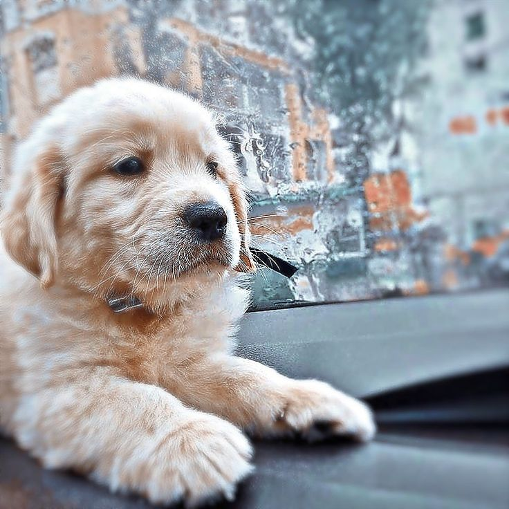

ONG - AYUDA UN PELUDO
La ONG ayuda a un peludo es una ONG sin fines de lucro que se especializa en la adopcion de animales que
viven
en la calle, la cual busca incentivar la adopcion de estos animales para mejorar sus vidas.
NUESTROS INTEGRANTES
Eder Ortiz - Lider ONG
Leo Mino - Veterinario
Alfredo Estay - Activista
 Gatos
Gatos

Perros